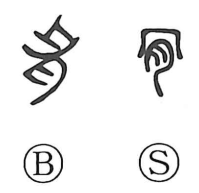

肯

Kun: ubenau | On: kou
to consent ・ to agree ・ to approve
Explanation
This is a pictograph: the ancient graph shows a bone above flesh, with 月 standing not for “moon” but as the abbreviated form of 肉, “meat.” It depicts the point where flesh fastens to bone—the tendon’s critical joint. Zhuangzi’s famed vignette of the cook Pao Ding, whose blade glides through an ox without snagging on the 肯啓, the pivotal link-joints, captures the idea of finding the crucial point and passing through without obstruction. From this image of carrying something through decisively arose senses like “aete” (boldly, positively) and, by extension, “ubenau” (to consent, to go along). Thus 肯 came to express positive assent and acceptance, as seen in compounds such as 肯定.